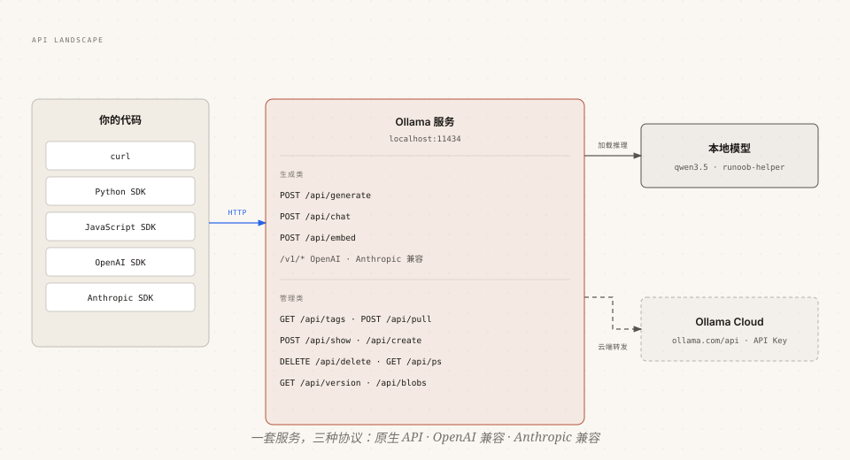

Ollama REST API プログラミング接続
Ollama はインストール後、ローカルの11434ポートで一連のREST APIを提供し、テキスト生成、対話、ベクトル埋め込み、モデル管理をカバーし、OpenAI、Anthropicの2つの互換プロトコルを提供します。
本記事では、コアインターフェースを一つずつ詳しく解説します。リクエスト構造、ストリーミング処理、使用量統計、エラーハンドリングをカバーし、あらゆる言語からローカルモデルに接続できるようにします。
2つのベースURLと認証方法
Ollama の API にはローカルとクラウドの2つのエントリがあり、認証ルールが異なります。

| 入口 | Base URL | 認証 |
|---|---|---|
| ローカルサービス | http://localhost:11434/api | 認証不要 |
| ローカルサービス（互換プロトコル） | http://localhost:11434/v1 | 認証不要、api_key は任意の値を入力 |
| Ollama Cloud | https://ollama.com/api | Authorization: Bearer + API Key |
ローカルサービスはデフォルトで認証不要で、すぐに使用できます。ollama.com のクラウドAPIに直接接続する場合は、公式サイトの設定ページでAPI Keyを作成し、リクエストヘッダーに設定してください。
テキスト生成：/api/generate
generate は最も基本的なシングルターン生成インターフェースで、モデル名とプロンプトを渡すだけです：
例
"model": "qwen3.5",
"prompt": "RUNOOB を一言で紹介してください",
"stream": false
}'
stream を false に設定すると、単一のJSONオブジェクトが返されます：
{
"model": "qwen3.5",
"created_at": "2026-08-29T03:20:00.499127Z",
"response": "RUNOOB（菜鸟教程）是一个面向编程初学者的免费中文教程网站。",
"done": true,
"total_duration": 10706818083,
"load_duration": 6338219291,
"prompt_eval_count": 26,
"prompt_eval_duration": 130079000,
"eval_count": 42,
"eval_duration": 4232710000
}
一般的なパラメータは次のとおりです：
| パラメータ | 説明 |
|---|---|
| model | 必須、モデル名 |
| prompt | プロンプト；空にするとモデルのプリロードに使用できます |
| stream | デフォルトは true でストリーミング返却；false の場合は一度に完全な結果を返します |
| system | システムプロンプトを一時的に指定し、Modelfile の設定を上書きします |
| options | 生成パラメータオブジェクト（temperature、num_ctx など。Modelfile パラメータと同じ） |
| format | "json" または完全な JSON Schema、構造化出力を強制 |
| keep_alive | リクエスト後のモデル常駐時間。"10m" など、-1 は常駐、0 は即時アンロード |
| raw | true の場合、テンプレートの組み立てをスキップし、提供した完全なプロンプトを直接使用します |
| suffix | モデル出力の後に続けるテキスト。テキスト補完シナリオに使用 |
| images | base64 画像配列。マルチモーダルモデルと組み合わせて使用 |
実用的なヒントが2つあります。空のプロンプトを送信するとモデルをメモリにプリロードでき、最初のリクエストの読み込み待ちを解消できます。keep_alive を 0 に設定し、空のプロンプトと組み合わせると、モデルを即座にアンロードしてビデオメモリを解放できます。
例
curl http://localhost:11434/api/generate -d '{"model": "qwen3.5"}'
# モデルを即時アンロードし、ビデオメモリを解放
curl http://localhost:11434/api/generate -d '{"model": "qwen3.5", "keep_alive": 0}'
対話生成：/api/chat
chat はマルチターン対話インターフェースで、メッセージ履歴は呼び出し側が自分で管理します。これが generate との本質的な違いです。
例
"model": "qwen3.5",
"messages": [
{ "role": "user", "content": "RUNOOB とは何ですか？" },
{ "role": "assistant", "content": "初心者向けの中国語チュートリアルサイトです。" },
{ "role": "user", "content": "それは無料ですか？一言で答えてください" }
],
"stream": false
}'
メッセージオブジェクトがサポートするフィールド：
| フィールド | 説明 |
|---|---|
| role | system / user / assistant / tool の4つのロール |
| content | メッセージの内容 |
| images | 任意、base64 画像リスト（マルチモーダルモデル） |
| thinking | 任意、思考モデルの推論プロセス（think パラメータと組み合わせて） |
| tool_calls | 任意、モデルリクエストが呼び出すツールリスト（ツール呼び出しの章で実践） |
マルチターン対話の正しい方法：モデルが毎回返す assistant メッセージを messages 配列に追加し、次の質問と一緒に送信します。これでモデルは完全なコンテキストを「記憶」できます。
messages は完全にあなたが管理するため、履歴をデータベースに永続化したり、要約に圧縮したり、セッションをまたいで復元したりできます——第5編で言及した「コマンドライン終了で記憶喪失」の問題は、ここで工学的な解決策が得られます。
ベクトル埋め込み：/api/embed
embed インターフェースはテキストをベクトルに変換し、RAG とセマンティック検索の原料工場です。
例
curl http://localhost:11434/api/embed -d '{
"model": "embeddinggemma",
"input": "RUNOOB はプログラミングチュートリアルサイトです"
}'
# バッチ：input に配列を渡すと、一度に複数のベクトルを返します
curl http://localhost:11434/api/embed -d '{
"model": "embeddinggemma",
"input": ["1つ目のテキスト", "2つ目のテキスト", "3つ目のテキスト"]
}'
レスポンスの embeddings は2次元配列で、各ベクトルは L2 正規化（単位長）済みのため、コサイン類似度で直接比較できます。
注目すべき2つのパラメータ：dimensions は出力ベクトルの次元を指定できます（モデルが対応していれば次元を減らしてストレージを節約できます）。truncate はデフォルトで true で、長すぎるテキストを自動的に切り詰めます。false に設定すると、長すぎる場合にエラーになります。
ストリーミングと非ストリーミング：レスポンスの処理方法
生成系インターフェースはデフォルトでストリーミング返却され、形式は NDJSON です。各行が独立した JSON オブジェクトになります。
{"model":"qwen3.5","created_at":"...","response":"RUNOOB","done":false}
{"model":"qwen3.5","created_at":"...","response":"（菜鸟教程）","done":false}
{"model":"qwen3.5","created_at":"...","response":"是编程初学者的入门网站。","done":false}
{"model":"qwen3.5","created_at":"...","response":"","done":true,"done_reason":"stop"}
クライアントは行ごとに読み取り、response フィールドを連結することで完全な回答になります。連結処理はリアルタイムでUIに描画できます。
2つのモードの使い分け：
| モード | 利点 | 適用シナリオ |
|---|---|---|
| ストリーミング（デフォルト） | 最初の文字の遅延が低く、リアルタイム表示が可能 | チャットインターフェース、長文生成 |
| 非ストリーミング stream:false | 一度に完全な結果を取得でき、処理が簡単 | バッチ処理、構造化出力、スクリプト呼び出し |
ストリーミングモードでは、出力の途中でエラーが発生する可能性があります。この場合、HTTPステータスコードは変更できないため、エラーはデータストリームの末尾に {"error": "..."} という1行として現れます。クライアントは解析時にこの行を確認する必要があります。
使用量統計とエラーハンドリング
各生成レスポンスの末尾にはパフォーマンス統計フィールドがあり、推論コストを評価するための一次データです。
| フィールド | 意味 |
|---|---|
| total_duration | リクエスト総所要時間（ナノ秒） |
| load_duration | モデル読み込み所要時間（最初のリクエストで顕著） |
| prompt_eval_count | 入力で消費されたトークン数 |
| prompt_eval_duration | 入力処理所要時間 |
| eval_count | 出力で生成されたトークン数 |
| eval_duration | 出力生成所要時間 |
生成速度（token/s）の計算式：eval_count / eval_duration * 10^9。各フィールドの時間単位はナノ秒です。
エラーハンドリングについては、APIは標準のHTTPステータスコードで結果を表します：
| ステータスコード | 意味 |
|---|---|
| 200 | 成功 |
| 400 | リクエストエラー（パラメータ不足、JSON不正など） |
| 404 | モデルが存在しない（最初に ollama pull を実行するか、名前を確認してください） |
| 429 | リクエストが頻繁すぎてレート制限 |
| 500 | サーバー内部エラー |
| 502 | ゲートウェイエラー（例：クラウドモデルに到達できない） |
エラーレスポンスボディは {"error": "エラー説明"} という構造に固定されており、クライアントは error フィールドを統一的に取得するだけで済みます。
モデル管理API概要
コマンドラインでできるモデル管理には、すべてAPIが対応しており、管理バックエンドや自動化スクリプトに適しています。
| エンドポイント | メソッド | 用途 |
|---|---|---|
| /api/tags | GET | ローカルモデルの一覧表示（パラメータ数、量子化レベルを含む） |
| /api/show | POST | モデルの詳細、能力、テンプレートの表示 |
| /api/pull | POST | モデルのプル、ダウンロード進捗をストリーミング返却 |
| /api/push | POST | モデルをモデルライブラリにプッシュ |
| /api/copy | POST | モデルのコピー（source / destination） |
| /api/delete | DELETE | モデルの削除 |
| /api/create | POST | モデルの作成（量子化を含む、Modelfile の能力に対応） |
| /api/ps | GET | 現在ロードされているモデルとビデオメモリ使用量の表示 |
| /api/version | GET | Ollama バージョンの確認 |
/api/tags を例にとると、レスポンスには各モデルの仕様詳細が含まれます：
{
"models": [
{
"name": "qwen3.5:latest",
"size": 6600000000,
"details": {
"family": "qwen3.5",
"parameter_size": "9B",
"quantization_level": "Q4_K_M"
}
}
]
}
quantization_level、parameter_size などのフィールドは、モデルセレクターインターフェースの作成に直接使用できます。
OpenAI互換インターフェース
既存の OpenAI アプリケーションをローカルモデルに切り替える場合、通常は base_url を変更するだけで済みます。
例
-H "Content-Type: application/json" \
-d '{
"model": "qwen3.5",
"messages": [{ "role": "user", "content": "RUNOOB を一言で紹介してください" }]
}'
互換範囲は5つのエンドポイントをカバーします：
| エンドポイント | 説明 |
|---|---|
| /v1/chat/completions | チャット補完。ストリーミング、ビジョン、ツール、JSON モードに対応 |
| /v1/completions | テキスト補完 |
| /v1/responses | Responses API（ステートレスモード） |
| /v1/embeddings | ベクトル埋め込み |
| /v1/models | モデル一覧 |
頻出する2つの相違点に注意してください：
1つ目：OpenAI プロトコルには num_ctx の概念がありません。コンテキストを変更する必要がある場合は、まず PARAMETER num_ctx を持つモデルを作成し、新しい名前で呼び出します（第7回の Modelfile または cp による名前の借用のいずれでも構いません）。
2つ目：一部のフィールドは現在サポートされていません：tool_choice、logit_bias、n、logprobs など。移行前にマニュアルのサポート一覧を確認することをお勧めします。
Anthropic互換インターフェース
Ollama も Anthropic Messages API 互換レイヤーを提供しているため、Claude Code などのツールはローカルモデルを直接使用できます。
例
-H "Content-Type: application/json" \
-H "anthropic-version: 2023-06-01" \
-d '{
"model": "qwen3.5",
"max_tokens": 1024,
"messages": [{ "role": "user", "content": "RUNOOB を一言で紹介してください" }]
}'
Claude Code のようなツールを接続する場合、2つの環境変数を設定するだけで済みます：
例
export ANTHROPIC_BASE_URL=http://localhost:11434
claude --model qwen3.5
注意すべき機能の制限：tool_choice の強制指定、プロンプトキャッシュ、バッチAPI、PDF入力などの Anthropic 機能は現在サポートされていません。トークン数は近似値です。
その他の拡張
クリックしてノートを共有
ノートはこの記事の内容の拡張である必要があります！
記事の投稿はこちらをクリック
登録招待コードの取得方法
ノートを共有する前にログインが必要です！
登録招待コードの取得方法